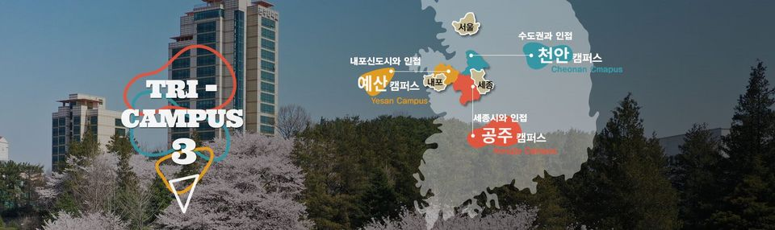

간호보건대학
- 간호학과
- 보건행정학과
- 의료정보학과
- 응급구조학과
공주대학교 간호보건대학, 公州大學校 看護保健大學
Kongju National University College of Nursing and Health
공주대학교의 간호대학과 보건과학대학이다.
1963년 현 충남세종 지역 최초의 간호사 양성기관인 공주간호고등기술학교로 시작하여, 지난 반세기가 넘는 동안 지역 보건 향상의 선도적 역할을 수행해 왔다.
2001년 공주대학교로 인수되었으며, 예술계열 학과와 함께 영상보건대학이란 단과대로 옥룡캠에 존재하다가, 2009년 여름방학 때 지금의 위치로 옮겨왔다.
2012년 기존의 영상보건대학을 바탕으로 간호/보건계열 학과만 모아서 간호보건대학으로 독립하였다. 그래서 단과대학 건물을 예술대학과 같이 쓰고 있다.
현재 간호학과, 보건행정학과, 응급구조학과, 의료정보학과로 구성되어 있으며, 국제화 역량을 강화하기위해 중국 북화대학, 일본 교린대학 등과도 국제학술교류를 활발히 진행하고 있다.
공주대학교 신관캠퍼스에 있는 단과대와 도서관 등 여러 시설들을 온라인 상으로 볼 수 있게 최대한 노력했습니다.
더 궁금한 곳이 있는 분들은 아래에 적어주시면 빠른 시일 내로 업로드 하도록 하겠습니다.
감사합니다.
